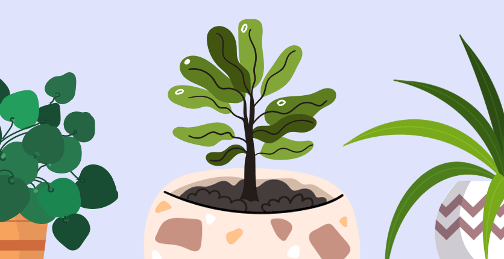

A Fertiliser is chemical or natural substance added to soil or land to increase its fertility.
These fertilisers contain essential nutrients required by the plants, including nitrogen, potassium, and phosphorus.
They also enhance the water retention capacity of the soil and increase its fertility.
It prescribe the suitable fertiliser for particular disease in plant
plant disease detector, which is able to detect different diseases
of plants based on images of their leaves.
Agriculture is hugely important to humans as a food source.
As a result, plant diseases detection has become a major concern.
The common problem existing among the Indian farmers are
they don't choose the right crop based on their soil requirements.
Due to this they face a serious setback in productivity.It suggests soil characteristics, soil types, crop yield data based on state and city
and suggests the farmers the right crop based on their site-specific parameters.
This reduces the wrong choice on a crop and increase in productivity.